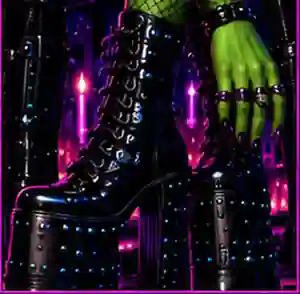

Approved / Editorial
Out of the Foxhole and Into Real Life
Primary Foxhole artwork. The rejected Satanica photo is not the homepage hero.
Important: site identity and article art are separate systems. An article can have its own visual concept without redesigning the publication around it.
The existing VCS masthead, black foundation, neon-purple framing, acid-green accents, editorial serif headlines and compact uppercase utility type remain the publication-level language.
Primary Foxhole artwork. The rejected Satanica photo is not the homepage hero.

The Nine No-Brainer guide is a story-specific reference/supporting asset. It is not the theme for the whole site.

Primary artwork for the identity article.

Primary artwork for the dungeon-history article.
Approved / Live can be used only in its assigned role. Working / Needs approval stays off the live site. Rejected / Do not use does not come back later because it is convenient.